CONNECT
Build stronger relationships among Computer Engineering students and the wider engineering community.
STUDENT ORGANIZATION
NETWORK / ACTIVE
LEADERSHIP × COMMUNITY × ENGINEERING
ABOUT SCPES
The Society of Computer Engineering Students (SCPES) connects students through academic, technical, professional, social, and community-centered experiences. It creates opportunities for students to learn beyond the classroom, collaborate with one another, and take an active role in the Computer Engineering community.
Build stronger relationships among Computer Engineering students and the wider engineering community.
Create opportunities that strengthen leadership, technical ability, creativity, and professional growth.
Encourage students to participate in academic, social, recreational, and outreach activities.
Promote the interests, achievements, and identity of the Computer Engineering student community.
OFFICERS
A student-led team working across leadership, operations, programs, technical work, media, outreach, and student engagement.
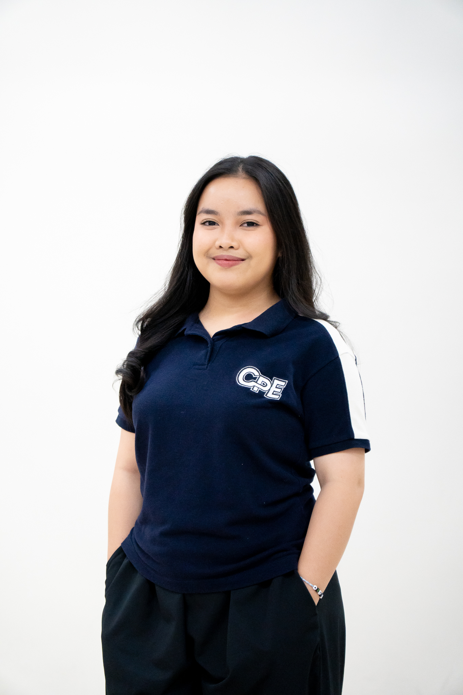
PRESIDENT
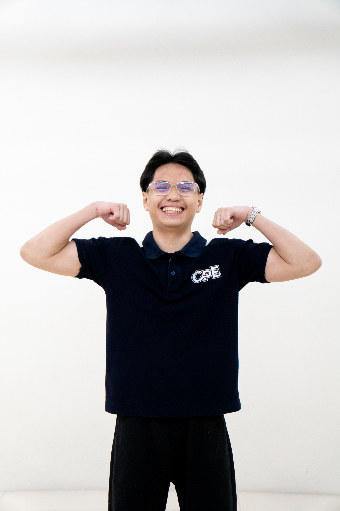
VP — INTERNAL
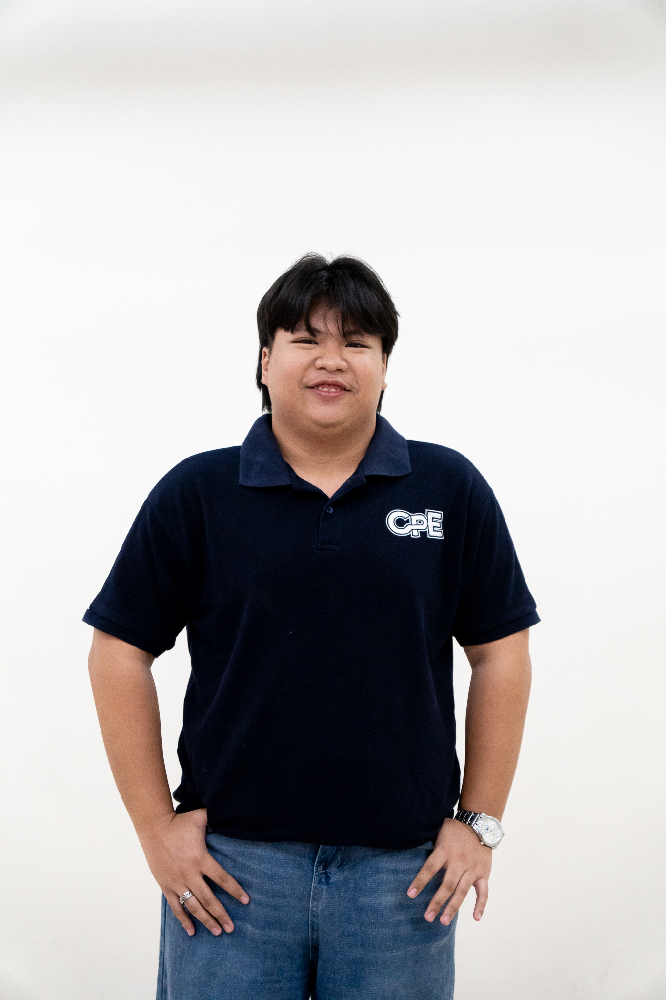
VP — EXTERNAL
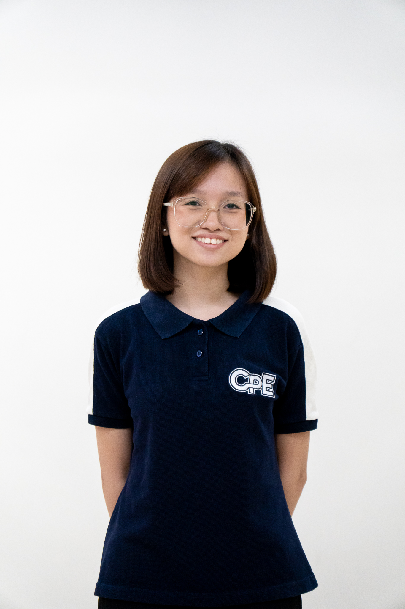
VP — SECRETARIAT
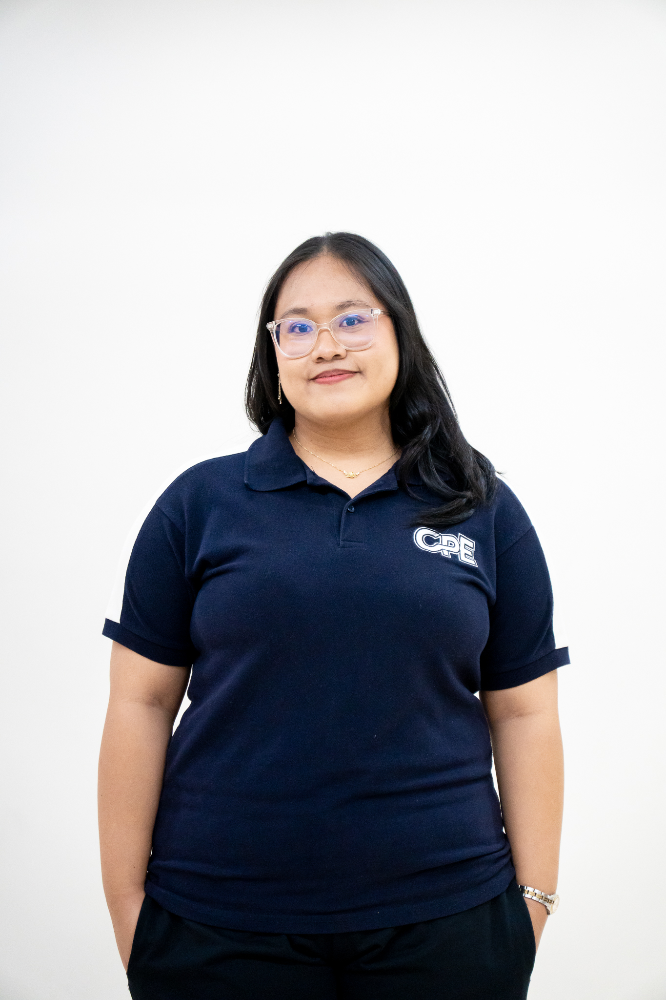
VP — BUSINESS & FINANCE
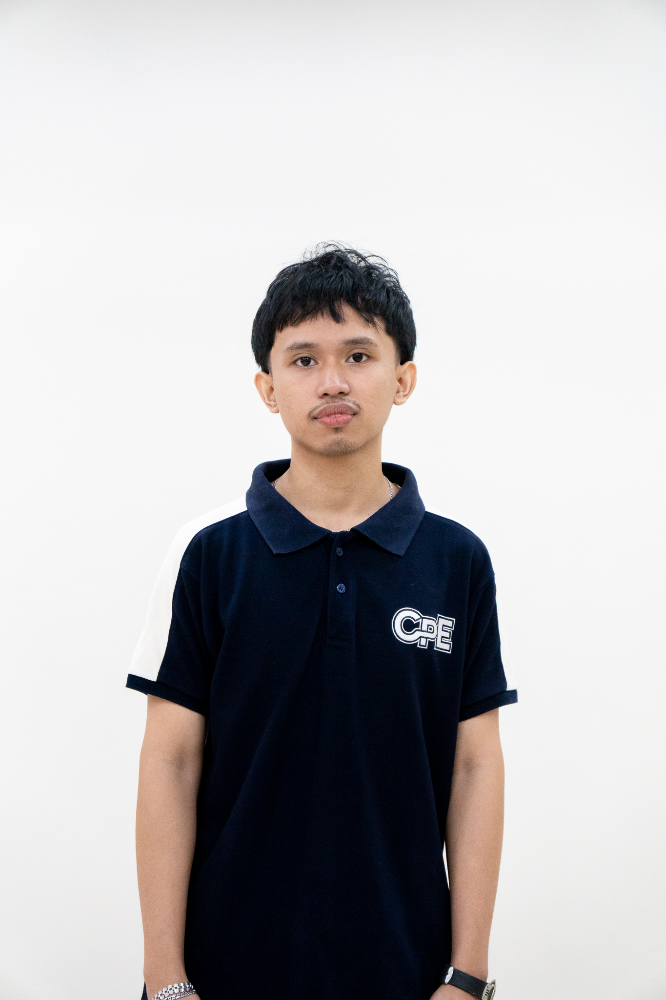
VP — CAREER DEVELOPMENT
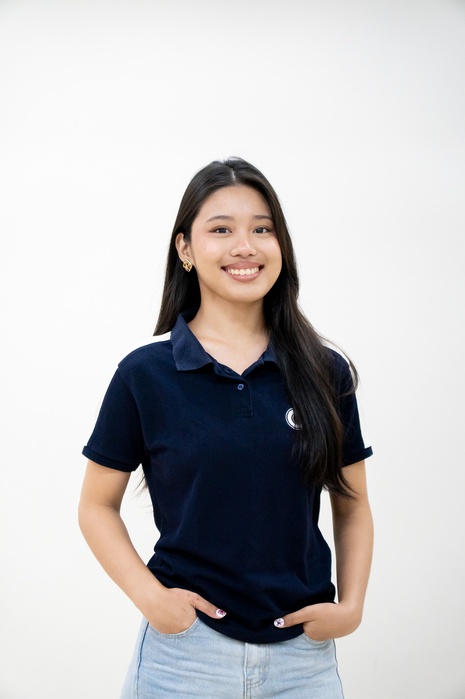
VP — EVENTS & PROGRAMS
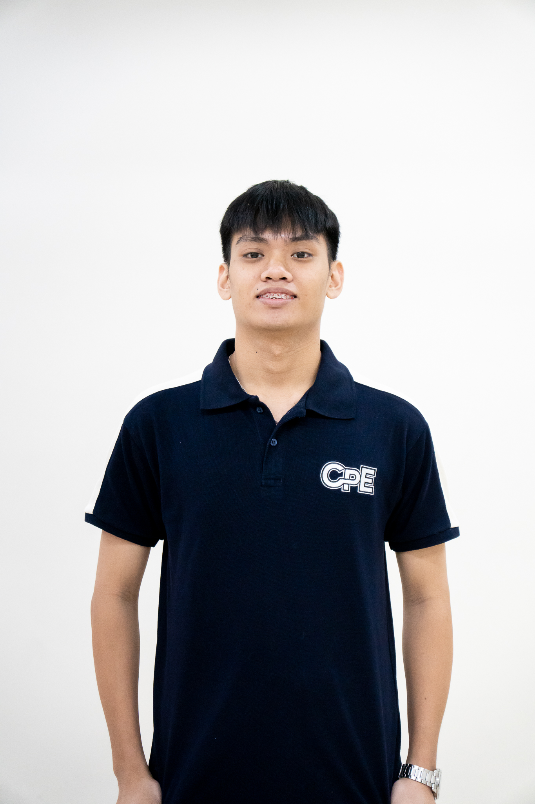
VP — OUTREACH & SOCIAL RESPONSIBILITY
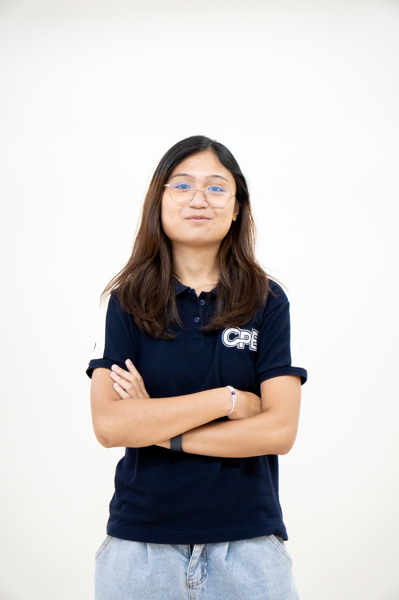
VP — TECHNICAL OPERATIONS
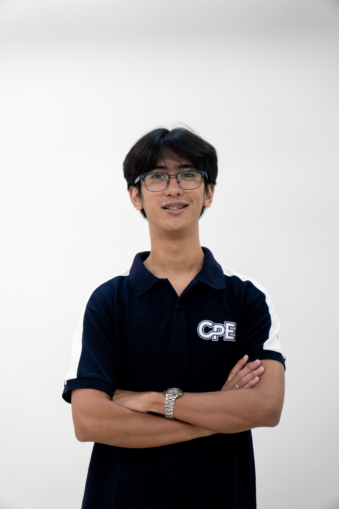
VP — CREATIVES & COMMUNICATIONS
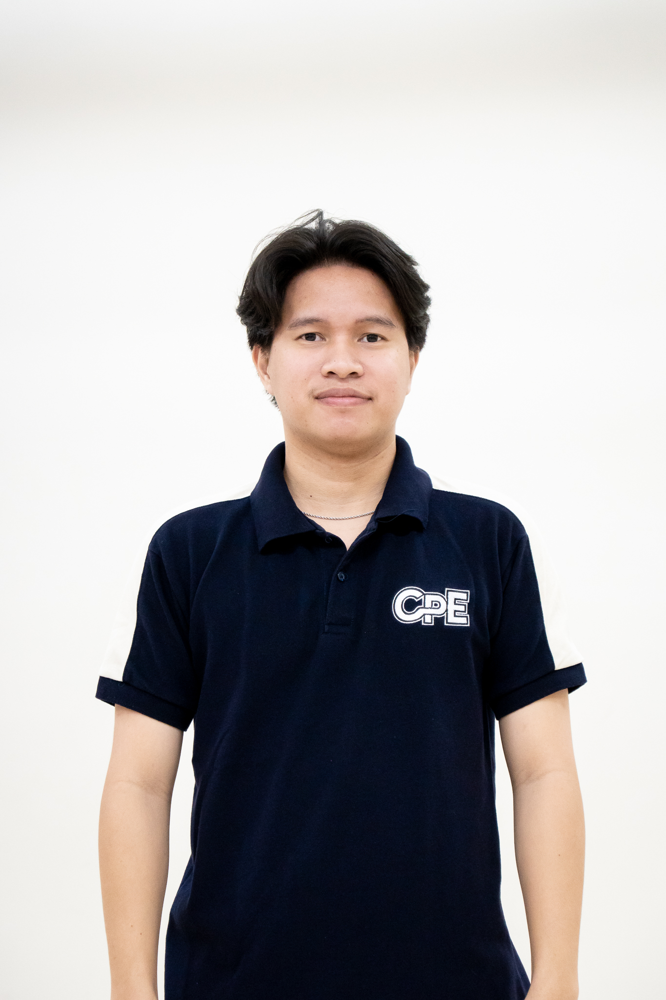
VP — MEDIA
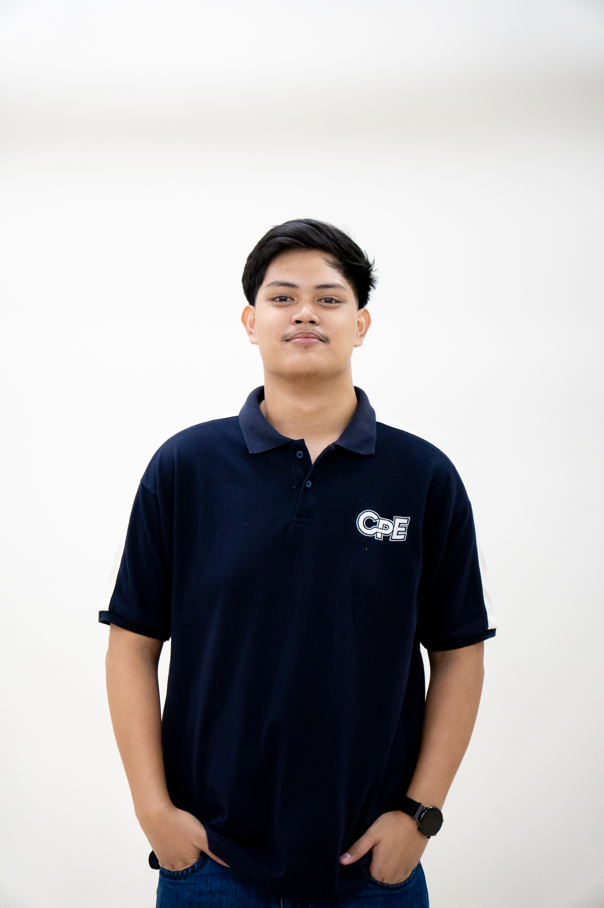
VP — LOGISTICS & EVENT COORDINATION
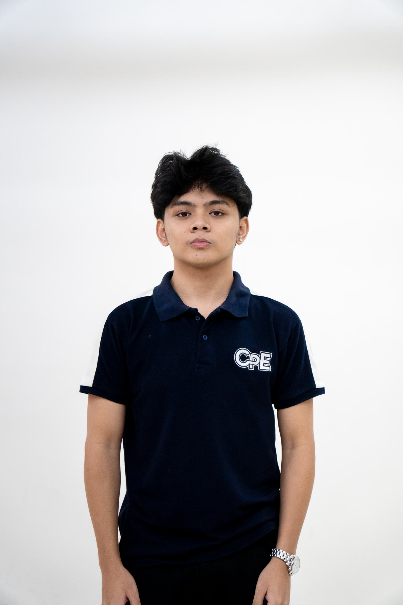
VP — RECREATION & WELLNESS
ACTIVITIES & EVENTS
WELCOME / CONNECT
Helping new Computer Engineering students meet the community, connect with fellow students, and begin their CpE journey.
LEARN / BUILD
Workshops, demonstrations, competitions, and learning experiences that extend technical skills beyond regular coursework.
SERVE / ACT
Student-led initiatives that connect engineering with environmental responsibility and meaningful community involvement.
PLAY / BELONG
Activities that strengthen teamwork, student wellness, friendship, and the shared identity of the organization.
STUDENT INVOLVEMENT
PROJECTS & ACCOMPLISHMENTS
An e-waste collection initiative encouraging responsible disposal, recycling, and sustainable habits within the student community.
SDG 12 × SDG 13Programs and activities designed to support academic growth, technical confidence, leadership, and career readiness.
LEARN × LEAD × BUILDExperiences that create stronger connections between students through shared events, collaboration, recreation, and service.
CONNECT × PARTICIPATESOCIETY OF COMPUTER ENGINEERING STUDENTS
NETWORK REMAINS ACTIVE